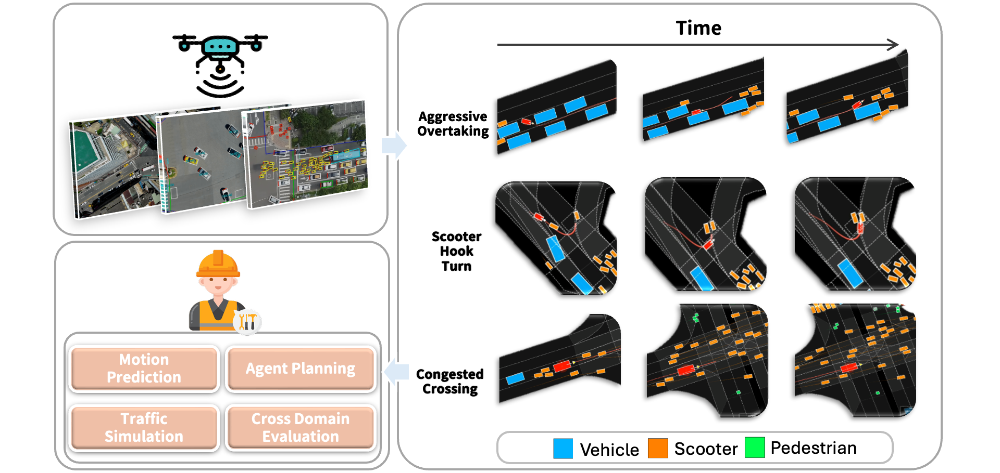
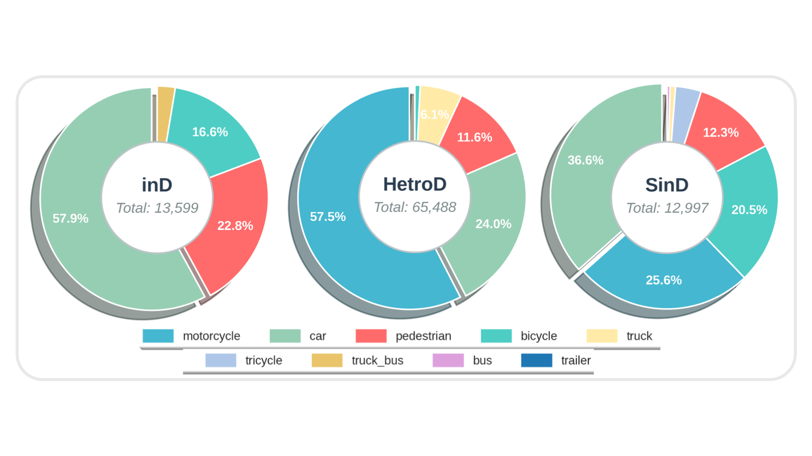
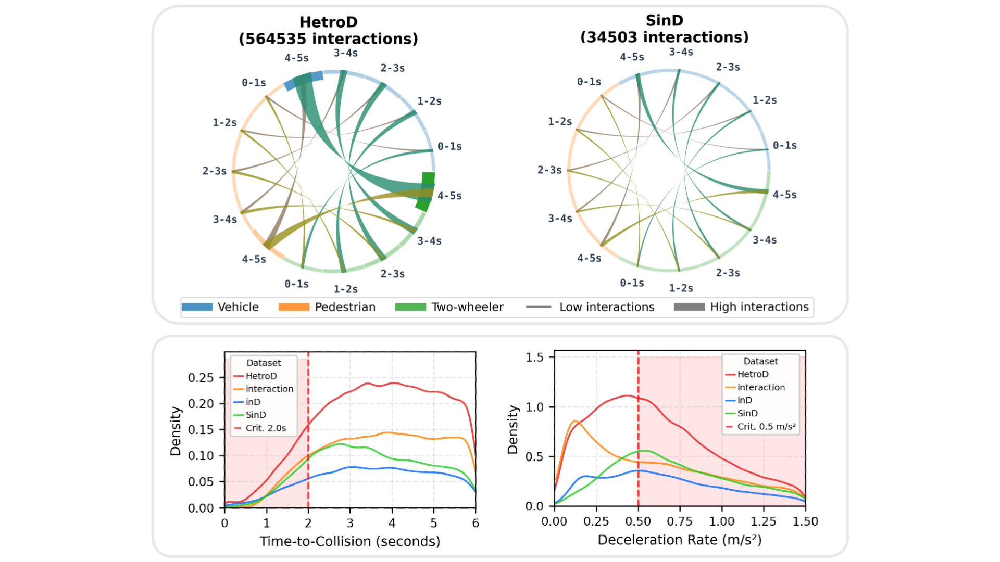
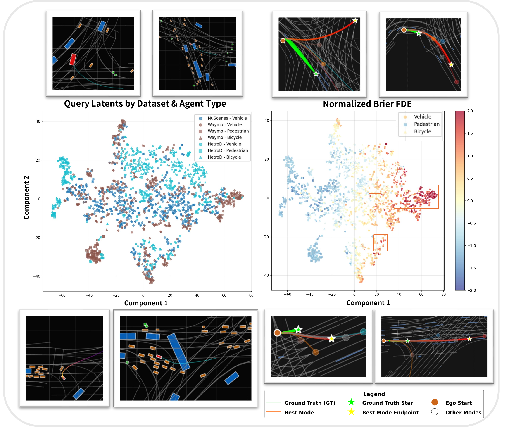

ICRA 2026
HetroD: A High-Fidelity Drone Dataset and Benchmark for Autonomous Driving in Heterogeneous Traffic
1 National Yang Ming Chiao Tung University2 UC Berkeley3 fka GmbH
Our dataset now also supports OpenDRIVE maps.
Explore the data
Traffic, seen from above.
Six location samples from the dataset. Play any clip to explore traffic at each location.
Swipe to explore all six locations.

- Agent trajectories
- ~65.4k
- Recorded traffic
- 17.5h
- Vulnerable road users
- 69.9%
- Benchmark tasks
- 3
Beyond lane-following
Complex behaviors. Real interactions.
Choose a behavior to explore recorded examples from heterogeneous traffic.
Congested Crossings
3 recorded examplesHook Turns
3 recorded examplesIllegal Right Turns
3 recorded examplesNavigate Around Illegal Parking
3 recorded examplesReverse Lane Usage
3 recorded examplesUnauthorized U-turns
3 recorded examplesDataset composition
A closer look at the traffic.
Agent diversity, interaction risk, and comparisons with existing datasets.
Swipe tables horizontally to see all columns.


| Dataset | Platform | Tracks | Duration | Interaction Scale1 | Heterogeneous Interaction Scale2 | Geographical Density3 | VRUs (%)4 |
|---|---|---|---|---|---|---|---|
| NuScenes [1] | On-board | ∼90k† | 320h | 0.675 | 0.549 | — | 20.1% |
| Waymo [2] | On-board | 7.6M | 574h | 1.000 | 1.000 | — | 11.5% |
| Argoverse2 [3] | On-board | 13.9M | 763h | 0.632 | 0.318 | — | 10.0% |
| NuPlan [4] | On-board | ∼5M† | 1282h | 0.274 | 0.213 | — | 46.3% |
| INTERACTION [5] | Drone | 40k | 16.5h | 0.132 | — | 0.011 | — |
| inD [6] | Drone | 13.5k | 10h | 0.071 | 0.185 | 0.023 | 39.4% |
| SinD [7] | Drone | 13.2k | 7.02h | 0.099 | 0.324 | 0.016 | 62.1% |
| HetroD | Drone | ~65.4k | 17.5h | 0.223 | 0.889 | 0.026 | 69.9% |
† Estimated values based on official statistics. — Metric not available. Dataset reference numbers correspond to the paper.
Metric definitions & dataset scale
1 Sinter = Σscenarios Dinter.
2 Shet = Σscenarios Σi,j 1(TTCi,j < 2 s ∧ typei ≠ typej).
3 Dgeo = N/A, where N is the number of agents within an 8 s window and A is the corresponding area.
4 VRUs = 100 × NVRU/(NVRU + NVeh) (VRU: pedestrians, bicycles/cyclists, motorcycles, tricycles; Vehicles: cars, trucks, buses, vans).
Note on scale: We report the dataset size as over/roughly 65.4k trajectories because counts may change slightly during ongoing quality control.
Evaluation results
A harder test of generalization.
Prediction and planning benchmarks expose the challenges of dense, heterogeneous traffic.
Swipe tables horizontally to see all columns.
Motion prediction
Motion prediction models struggle due to heterogeneous traffic complexity.
Cross-dataset evaluation
Brier-FDE ↓ · lower is better| Train \ Test | NuScenes | Waymo* | SinD | HetroD |
|---|---|---|---|---|
| NuScenes | 2.95 | 10.43 | 5.14 | 6.76 |
| Waymo | 4.01 | 2.28 | 4.26 | 6.71 |
| SinD | 16.07 | 26.34 | 2.06 | 3.30 |
| HetroD | 21.39 | 26.49 | 3.71 | 0.44 |
| Train \ Test | NuScenes | Waymo* | SinD | HetroD |
|---|---|---|---|---|
| NuScenes | 2.99 | 8.79 | 5.23 | 9.37 |
| Waymo | 2.67 | 2.20 | 3.53 | 10.75 |
| SinD | 8.23 | 13.40 | 1.96 | 9.23 |
| HetroD | 19.57 | 25.28 | 8.06 | 0.75 |
*Waymo uses 30% of its original training data due to resource constraints.
Split & scenario analysisGeneralization across maps, time, agent types, and interaction risks.
| Setting | MTR | Wayformer |
|---|---|---|
| Same-map | 0.44 | 0.75 |
| Diff-map | 1.17 (+166%) | 1.53 (+104%) |
| Diff-time | 0.42 (−5%) | 0.76 (+1%) |
| Scenario | MTR-Waymo* | MTR-SinD | MTR-HetroD |
|---|---|---|---|
| Agent type | |||
| Vehicle | 3.64 | 2.55 | 0.83 |
| Two-wheeler | 8.69 | 4.63 | 1.16 |
| Pedestrian | 2.85 | 1.17 | 0.26 |
| Cross-type TTC risk | |||
| High risk (TTC < 2 s) | 8.51 | 4.76 | 1.25 |
| Moderate (2 ≤ min TTC < 4 s) | 8.48 | 4.67 | 1.19 |
| Low (TTC > 4 s) | 7.87 | 4.00 | 0.90 |
| Scene-level heterogeneity | |||
| Low heterogeneity density | 5.01 | 3.08 | 0.90 |
| High heterogeneity density | 8.04 | 4.25 | 1.06 |
Distribution: Vehicles 39.4%, Two-wheelers 51.5%, Pedestrians 9.1% | TTC: High 26.5%, Moderate 8.7%, Low 64.8% | Heterogeneity: Low 66.3%, High 33.7%
Closed-loop planning
State-of-the-art rule-based planners show increased collision rates in heterogeneous traffic scenarios.
| Dataset | Planner | NuPlan Score ↑ | TTC Bound ↑ | Progress ↑ | Lane Score ↑ | Comfort ↑ | Collisions ↓ |
|---|---|---|---|---|---|---|---|
| NuPlan | IDM | 0.85 | 0.94 | 0.92 | 0.99 | 0.48 | 0.016 |
| PDM-Closed | 0.83 | 0.97 | 0.91 | 0.99 | 0.31 | 0.006 | |
| HetroD | IDM | 0.68 | 0.91 | 0.81 | 0.89 | 0.37 | 0.074 |
| PDM-Closed | 0.70 | 0.95 | 0.78 | 0.97 | 0.21 | 0.040 |
Where do collisions occur?VRU collision breakdown on HetroD.
| Planner | At-Fault Collision Rate | VRU Front Collision Rate | VRU Lateral Collision Rate |
|---|---|---|---|
| IDM | 0.074 | 0.008 | 0.031 |
| PDM-Closed | 0.040 | 0.004 | 0.022 |
Qualitative results
Understanding the failure cases.
Planning failures and prediction challenges in complex multi-agent scenes.
Planning failure examples
Prediction across datasets
Latent scenario embeddings from Wayformer trained on Waymo.

Work with HetroD
Dataset processing & usage.
Commercial use
The HetroD dataset is free for non-commercial use only. For commercial use, please visit levelxdata.com.
Acknowledgment
The HetroD dataset was processed by leveLXData's high-quality, real-world trajectory and scenario data processing pipeline.
Reference
Cite this work.
@inproceedings{hetrod,
title={HetroD: A High-Fidelity Drone Dataset and Benchmark for Autonomous Driving in Heterogeneous Traffic},
author={Yu-Hsiang Chen and Wei-Jer Chang and Christian Kotulla and Thomas Keutgens and Steffen Runde and Tobias Moers and Christoph Klas and Wei Zhan and Masayoshi Tomizuka and Yi-Ting Chen},
booktitle={Proceedings of the IEEE International Conference on Robotics and Automation (ICRA) },
year={2026}
}